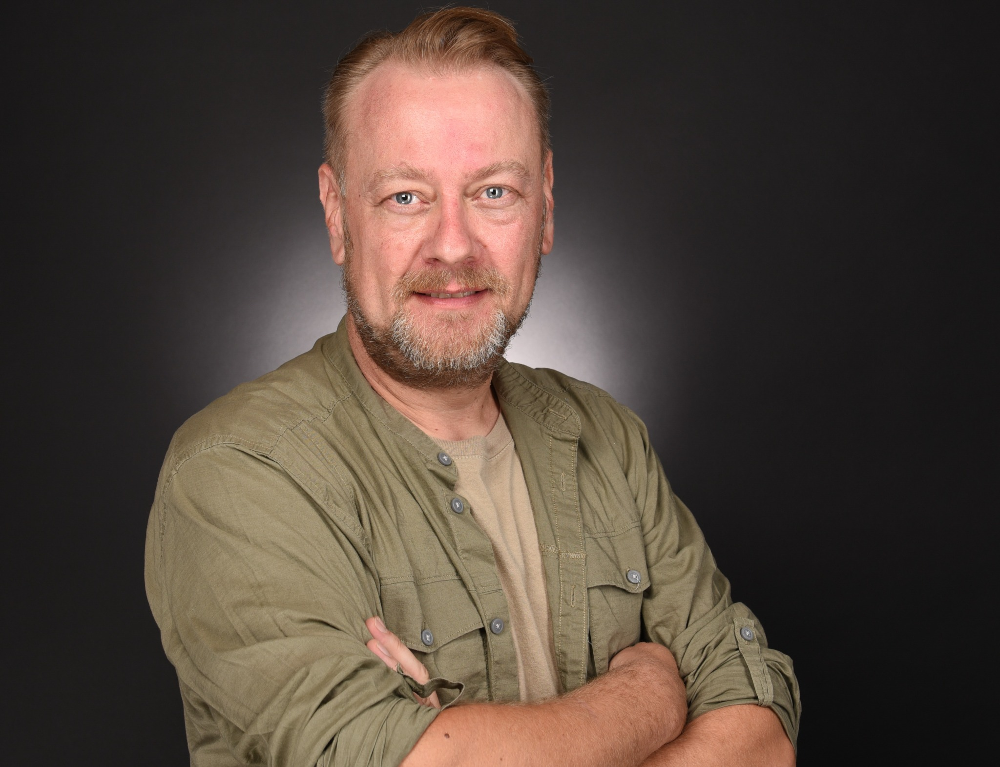

Prozesse wirklich verstehen
Ich betrachte nicht nur den Soll-Prozess, sondern auch Ausnahmen, Übergaben, operative Belastung und das, was im Alltag tatsächlich funktioniert.
Customer Service · Prozesse · AI & Automation
Ich verbinde langjährige Kundenservice-Erfahrung mit pragmatischer Prozessgestaltung und einem klaren Blick auf sinnvolle KI-Anwendungen – vom ersten Anwendungsfall bis zum kontrollierten MVP.

Was ich einbringe
Mein Schwerpunkt liegt dort, wo Kundenservice, operative Realität und technische Möglichkeiten zusammenkommen. Ich strukturiere komplexe Themen, schaffe klare Entscheidungen und übersetze Ideen in belastbare nächste Schritte.
Ich betrachte nicht nur den Soll-Prozess, sondern auch Ausnahmen, Übergaben, operative Belastung und das, was im Alltag tatsächlich funktioniert.
Gute Automatisierung braucht klare Kriterien, menschliche Kontrolle, nachvollziehbare Entscheidungen und einen verlässlichen Fallback.
Ich verbinde Anforderungen aus Fachbereich und Betrieb mit IT, Dienstleistern und Management – verständlich, lösungsorientiert und ohne unnötigen Techniknebel.
Ausgewählte Praxis
Anonymisierte Beispiele aus meiner Arbeit. Im Mittelpunkt stehen nicht möglichst große KI-Versprechen, sondern klar abgegrenzte Anwendungen, messbare Ziele und verantwortbare Entscheidungen.
Begleitung eines MVP für Kontakte außerhalb der Servicezeiten: Wissensbasis, Qualitätsbewertung, Grenzen, Datenschutz und nächste Ausbaustufen.
Entwicklung einer Gate-Logik für eindeutige Fälle – mit Pflichtkriterien, Routing, Fallback-Prozess und klarer Trennung zwischen Automatisierung und notwendiger Klärung.
Analyse von Bearbeitungszeiten, Kontaktmustern und Wiederholungsanrufen, um operative Auffälligkeiten sichtbar und Verbesserungen überprüfbar zu machen.
Mein Weg
„Kundenservice besser organisieren, Prozesse verständlicher machen und neue Technologien so einsetzen, dass sie tatsächlich helfen.“
Mein beruflicher Weg verbindet operative Verantwortung, Prozess- und CRM-Arbeit, Analyse, Projekte und Führungserfahrung. Diese Perspektiven helfen mir heute, Veränderungen nicht nur auf dem Papier zu betrachten.
Ich suche Aufgaben mit Gestaltungsspielraum – als Senior Expert, Product Owner, Projektverantwortlicher oder fachlicher Lead. Entscheidend ist für mich nicht der Titel, sondern die Möglichkeit, aus einer guten Idee eine funktionierende Lösung zu machen.